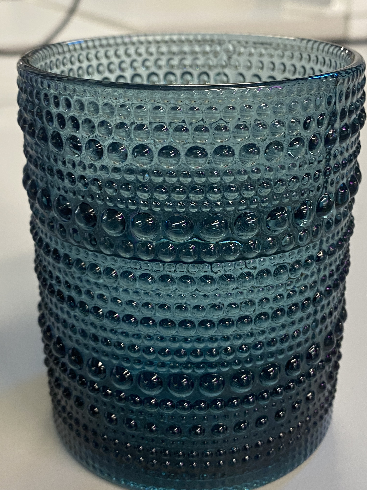

Welcome to my Hmmm page! I am very bad at capturing good photos, and almost always forget to take pictures on important events. Yet, here are some moments which I captured.
Miscellaneous
I attended IEEE International Conference on Frontiers of Information Technology (FIT'24) on December 9 and December 10. Two of my papers were accepted here this year.I work at Cowlar Inc., which is the only company of Pakistan backed by Y-Combinator, USA. This is my desk. I can't help but flex the Internet speed on my computer (~3 gigs per sec) :)My desk at Cowlar. It's fun to work on 4 screens :)
Visit to Edmonton, Canada (June 2024 - September 2024)
This was my first time going to North America. I met so many amazing people from my field (CS and AI), as well as other fields; made so many new friends and connections; and got to appreciate and interact with people from diverse cultures. I will miss Edmonton.
Attended a seminar where Adam White was speaking. It was a dream come true seeing him in reality, after I had taken his famous RL course on Coursera.Presented my work in Russ Group meeting on Aug 30, 2024. This was my last time attending this group's meeting in person. I loved how fruitful these meetings were. Everyone was brilliant, asking rigorous questions from presenters every time anyone presented their work.Professor Russ invited us to his home for a party. I had the best desi food in Canada in this party :) In the picture are: Anuradha, Pooja, Russ, Weijie, and I (from left).I presented my research in University of Alberta's annual ReverseExpo. Reverse EXPO is an annual meeting organized by the Department of Computing Science at the University of Alberta. In the picture are: Me, and Pooja (from left).Mitacs interns at the University of Alberta had to present their work at the end of the internship. Here is me doing that. I wore glasses just to have 'Professor-like-vibes' jest.Anuradha, I and Pooja (from left), after getting our Mitacs Internship Certificate.I was featured in Alberta's Senate Chamber in University of Alberta, along with other Mitacs Interns.I am receiving my Mitacs Internship Certificate.University of Alberta's CAB (Central Academic Building).

This is the empty cup after I had sparkling water for the first time in my life at Alberta Machine Intelligence's co-working space.Went to West Edmonton Mall, which is North America's biggest mall.A statue near UoA. This guy clearly had a very low body-fat percentage :)My first time doing ice-skating.It was about to rain, and I was commuting to my room.Me in front of Alberta's parliament.Went to a corn maze and it took me 3 hours to figure out how to come out :)It was sad to leave Edmonton. I will miss it. This is me going back.Flying above Montreal while going back.
Malakwal - My Hometown
I was born in Malakwal, a small town in Punjab, Pakistan. Being from an unknown remote town has never held me back. My goal is to be a global leader in AI, and advance access to educational resources for underprivileged and remote communities like mine. Most of my school friends had to abandon education, just because they did not have the resources to fund their education, and had to support their families financially. Other than my academic pursuits, I want to help students like these so everyone can thrive at warp speed. The road below goes straight to my home in Malakwal.